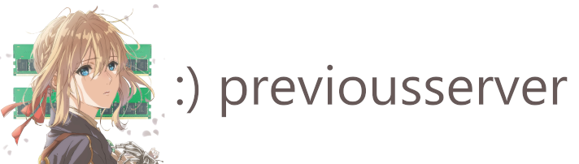
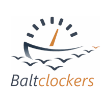

Ламповое и растущее двуязычное сообщество ценителей компухтеров и калмыкских мультиков. Всё о разгоне, методике замера производительности, технологиях, аниме и о стиле жизни. Мы судим не по опыту и знаниям, а по открытости новому и человеческим ценностям. Залетайте, пойдём вместе!
* ЖИЗНЬ * ТЕХНОЛОГИИ * РАЗГОН * АНИМЕ *
Cozy and growing bilingual community of computery and weeb cartoon enthusiasts. All things overclocking, performance measurement methodology, technology, anime and lifestyle. We don't judge by expertise, but by an open mind and human values. Hop on, let's move forward together!
* LIFE * TECH * OVERCLOCKING * ANIME *
Now complete with our very own HWBOT team! Теперь у нас есть своя команда на HWBOT!
